How Daylight Commons works
What the extension reads, where each sign comes from, what leaves your browser, and how anyone can check a receipt without us.
Updated 2026-10-23.
Daylight Commons is a browser extension. Rest the pointer on a reply on X, Reddit, YouTube, Bluesky, Mastodon and a few other sites, and a window opens beside it. The window shows where the platform places the account, signs of coordination, how the post argues, and who stands behind a linked outlet. Each sign names its source and says what it does not prove. Daylight Commons never calls anyone a bot, a propagandist or an extremist, and it never decides for you.
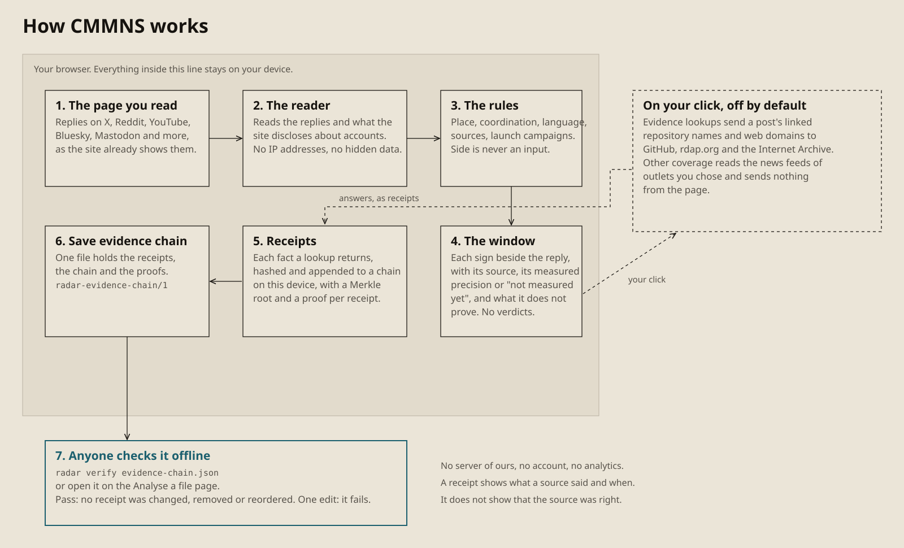
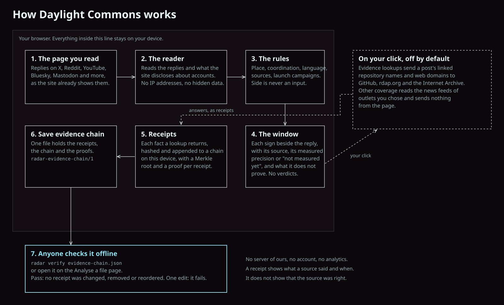
The path a reply takes
Everything up to the window happens in your browser. The reader takes only what the site already shows you, and what the site discloses about accounts. The rules turn that into signs. Political side is never an input, and a test checks that the same words count the same whichever side they target.
Two features reach further, and only after you turn them on and click. Evidence lookups send the repository names and web domains a post links to GitHub, rdap.org and the Internet Archive. Other coverage reads the news feeds of outlets you chose and sends nothing from the page. Each says what it sends and to whom before the first use.
Receipts you can check without us
When an evidence lookup answers, Daylight Commons keeps the answer as a receipt: what the source said, its address, the time, a hash of the answer and what the fact does not prove. Each receipt is appended to a hash chain in your browser, with a Merkle root over the chain and a proof for each receipt. "Save evidence chain" downloads the whole chain as one file.
Anyone holding that file can check it offline, with the command line tool or the Analyse a file page inside the extension. The check fails when a receipt was changed, removed or reordered. A passing check shows the chain is the one this browser recorded. It does not show that a source told the truth, and whoever holds the device could start a new chain.
Watch it
Install, a page, a reply's window, its evidence, a lookup's receipts, and the saved chain checked offline, in under two minutes, on synthetic pages where every account is invented.
What each finding shows
Every still below is the installed extension on a synthetic page. Every account in them is invented.
Place
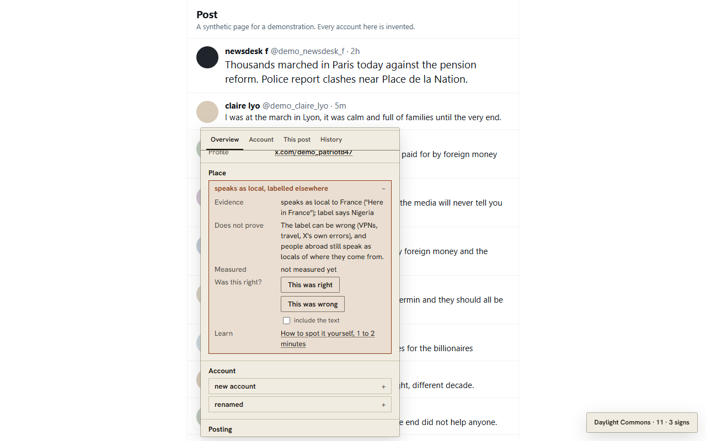
Does not prove: The label can be wrong (VPNs, travel, X's own errors), and people abroad still speak as locals of where they come from.
Account
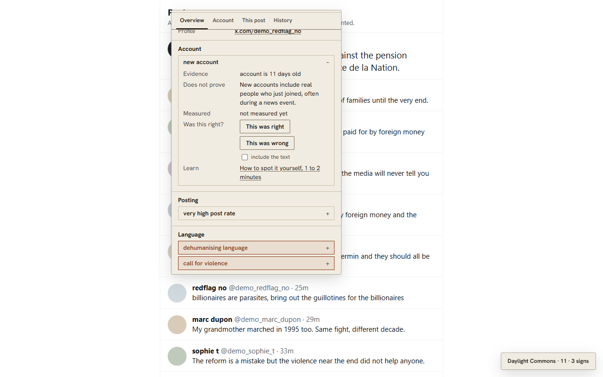
Does not prove: New accounts include real people who just joined, often during a news event.
Posting
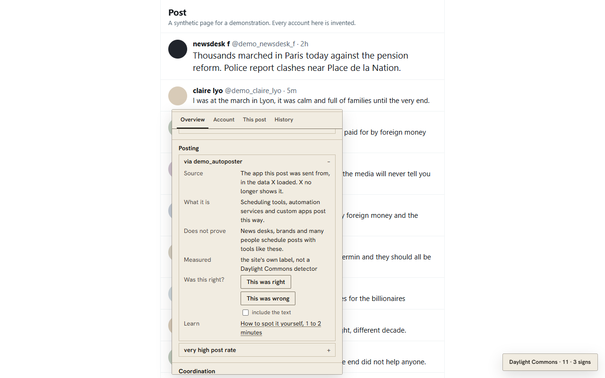
Does not prove: Scheduling tools are common among news desks, brands and busy people.
Coordination
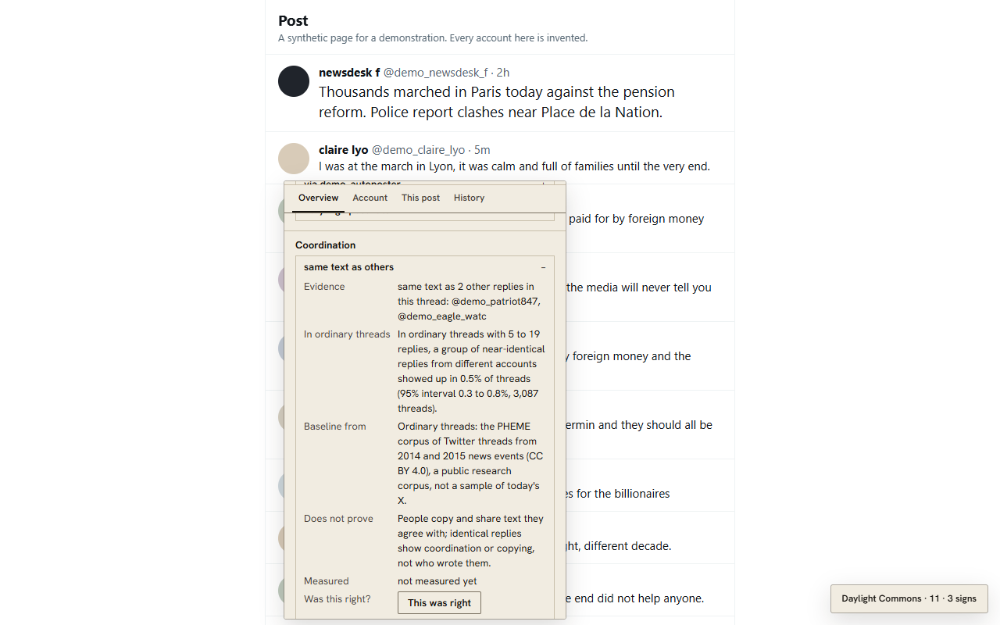
Does not prove: People copy and share text they agree with; identical replies show coordination or copying, not who wrote them.
Language
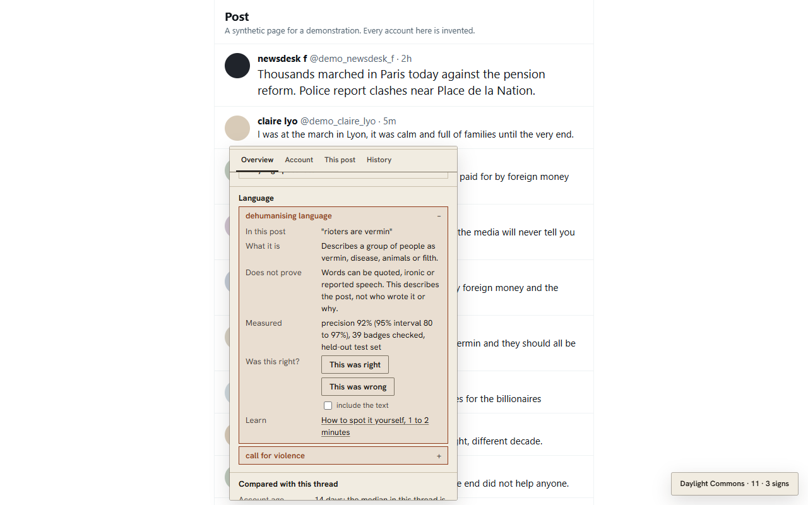
Does not prove: Words can be quoted, ironic or reported speech. This describes the post, not who wrote it or why.
Fact-checked claims
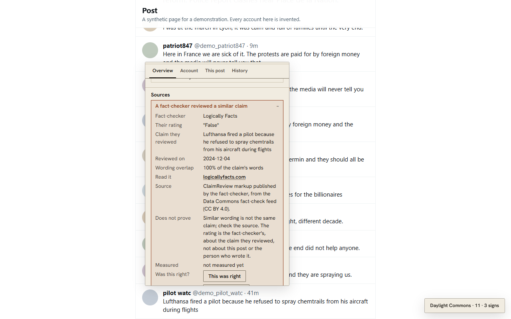
Does not prove: Similar wording is not the same claim; check the source. The rating is the fact-checker's, about the claim they reviewed, not about this post or the person who wrote it.
Sources
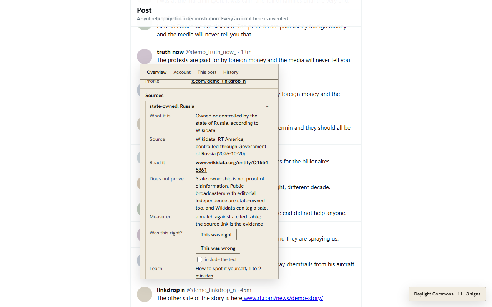
Does not prove: State ownership is not proof of disinformation. Public broadcasters with editorial independence are state-owned too, and Wikidata can lag a sale.
Thread report
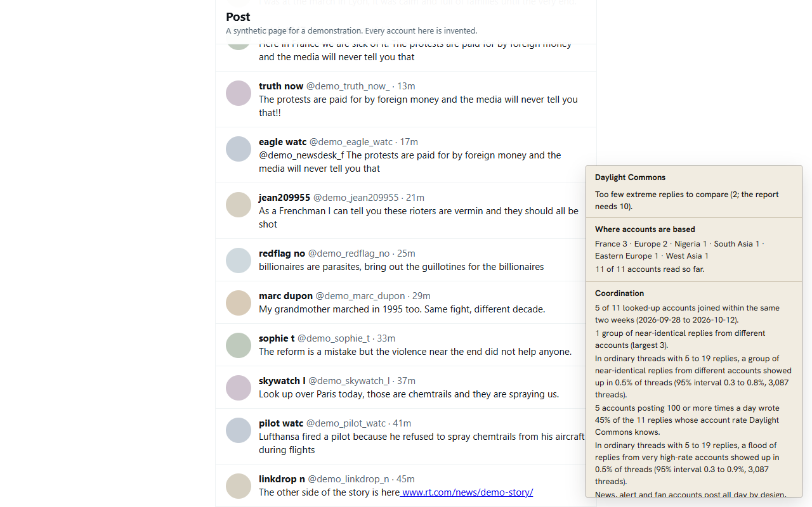
Does not prove: A skew can come from how the platform ranks replies, from which accounts were looked up, or from real people who joined during the event. It says nothing about any one reply or account.
Launch campaign
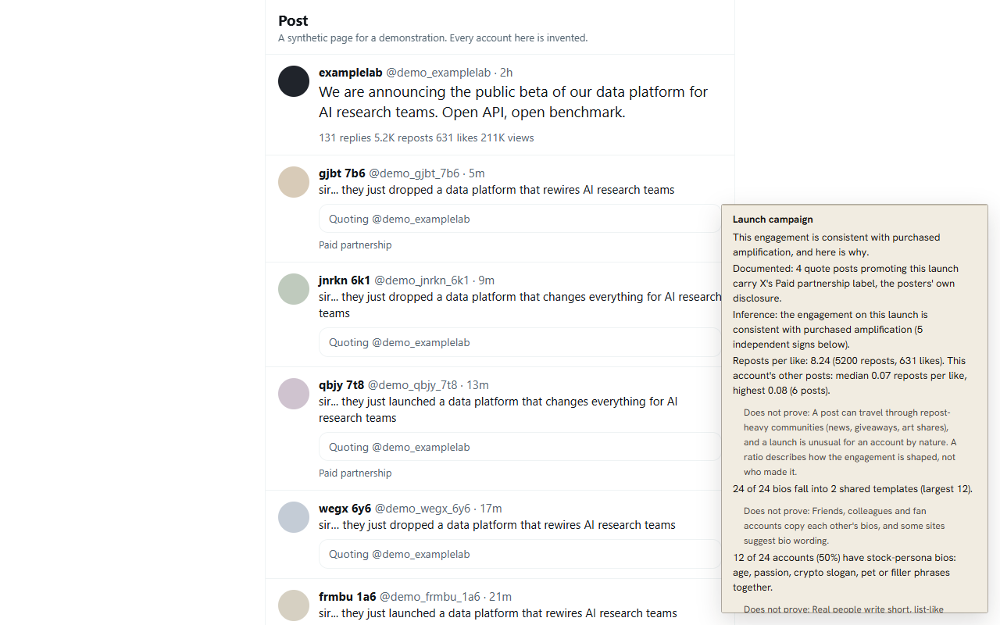
Does not prove: These signs describe how this post's engagement looks in what your page loaded. They do not say who paid, whether the product is good, or that any one account is fake. Real people also write stock bios, join in waves and reshare launches.
Evidence receipts
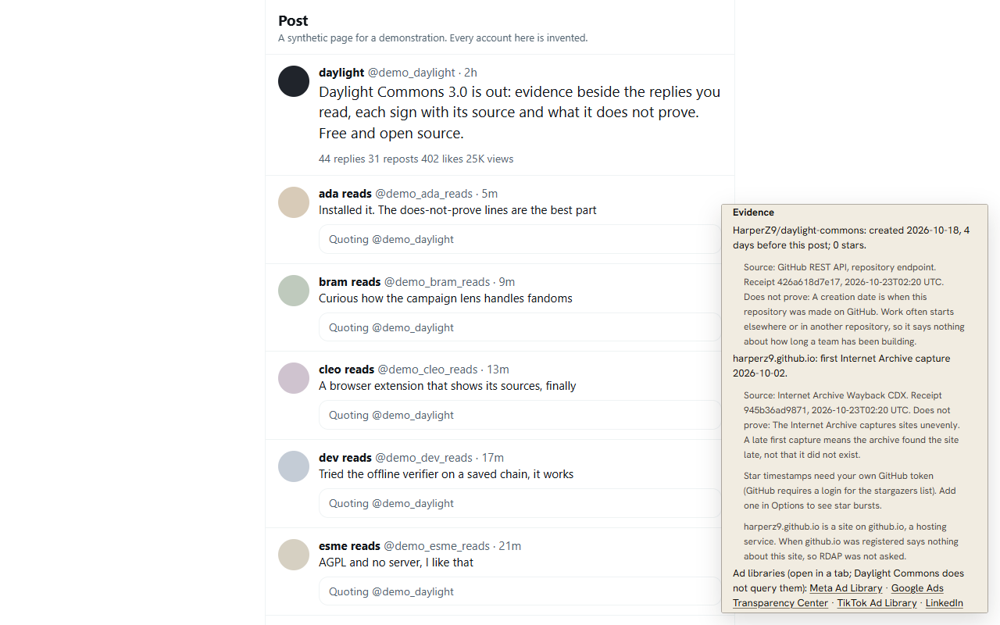
Does not prove: A creation date is when this repository was made on GitHub. Work often starts elsewhere or in another repository, so it says nothing about how long a team has been building.
Offline check
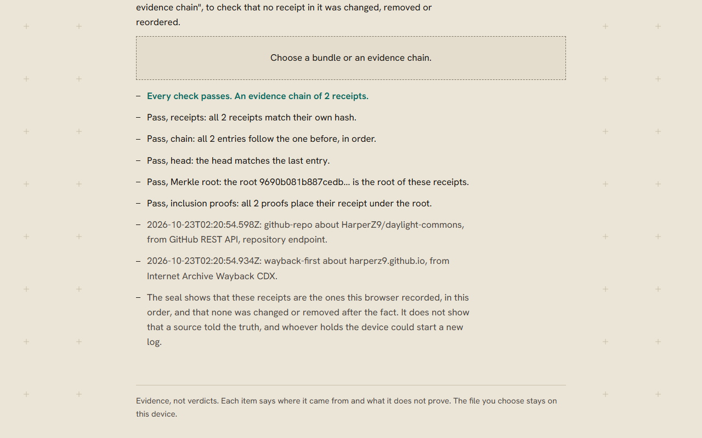
Does not prove: The seal shows that these receipts are the ones this browser recorded, in this order, and that none was changed or removed after the fact. It does not show that a source told the truth, and whoever holds the device could start a new log.
Run it on us
The screen recording on this page runs the evidence lookup on a synthetic post that links Daylight Commons' own repository and site. The answers are real: GitHub's creation date for the repository, and the Internet Archive's first capture of the site. The site is a page on github.io, a hosting service, so Daylight Commons does not ask RDAP when github.io was registered. That date would say nothing about this site.
Limits
- Platform labels can be wrong. VPNs and travel move them, and users can broaden them to a region.
- Daylight Commons sees only the replies the site chose to show, in the site's order.
- Most signs are not measured yet and say so. The measured ones show their precision with a 95% interval on the measurement page.
- The launch campaign lens has no measured precision. Until a media lawyer has reviewed its wording, it names no company: every claim reads "this launch".
- A site redesign can break a reader until Daylight Commons is updated. The extension says so when it reads nothing where it should.
Daylight Commons gives evidence, not verdicts. It asks only the site you are on, and anything else only when you turn on Other coverage or evidence lookups. Free and open source under the AGPL-3.0.